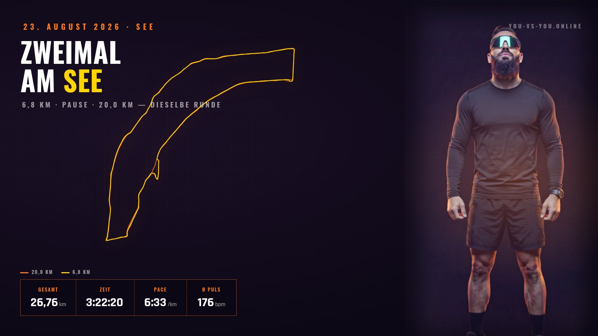
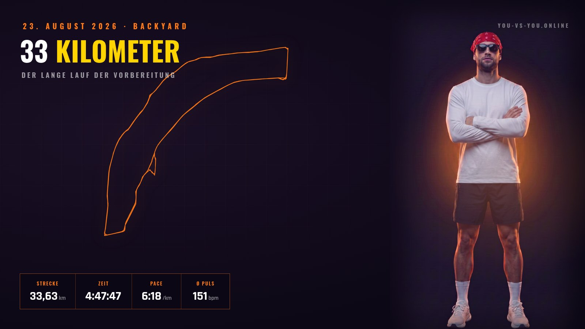

Ihr kennt Stunde vier
Am Anfang ist alles leicht. Irgendwann wird jeder Kilometer eine eigene Entscheidung. Wer das einmal erlebt hat, muss es sich nicht erklären lassen.
Wer hier zuschaut, sucht selten den Sieger. Die meisten von euch kennen den Moment, in dem es nicht mehr ums Tempo geht — sondern nur noch darum, weiterzumachen.
Am Anfang ist alles leicht. Irgendwann wird jeder Kilometer eine eigene Entscheidung. Wer das einmal erlebt hat, muss es sich nicht erklären lassen.
Auf einem Rundkurs überholt man ständig Leute, die ein völlig anderes Rennen laufen. Das macht Vergleiche sinnlos — und nimmt eine Menge Druck raus.
Es gibt keine Zielzeit, die so einen Tag rechtfertigt. Es gibt nur die Frage, ob man dahin gegangen ist, wo es unbequem wird.
Deshalb der Name. Der Gegner steht nicht an der Startlinie — er läuft die ganze Zeit mit.
Elf Kilometer, davon fast eine Stunde im Stehen — das Backyard-Format zwingt zum Warten zwischen den Runden, und genau das ist der zähe Teil. Bei Kilometer 9 lag der Puls im Schnitt bei 155, in der Spitze bei 191. In Bewegung waren es 7:39 pro Kilometer; die 12:35 auf der Uhr sind Gesamtzeit und sagen über das Tempo nichts.
Aus Phillips Perspektive gefilmt: die 10-Kilometer-Marke fällt mitten in die Aufnahme. Sein Puls blieb mit 132 im Schnitt deutlich ruhiger als meiner — bei fast identischer Strecke, Zeit und Höhenmetern. Das ist der Unterschied, den Grundlagenausdauer macht.

Zwei Läufe hintereinander auf derselben Runde am See: erst 6,8 Kilometer, kurze Pause, dann 20 weitere. Zusammen 26,76 Kilometer in 3:22, davon 2:55 in Bewegung. Der Puls zeigt den Schnitt deutlich — die gestrichelte Linie markiert, wo der zweite Lauf beginnt. Ab da bleibt er oben.

Der lange Lauf der Vorbereitung: 33,63 Kilometer in 4:47:47, dieselbe Runde wie Saschas Doppel, nur weiter. 6:18 pro Kilometer in Bewegung bei einem Schnittpuls von 151 — das ist das Tempo, das über sechs Stunden tragen muss.
Anfragen von Marken, Vereinen und Veranstaltern sind willkommen. Damit wir beide keine Zeit verlieren, hier vorab, worum es gehen kann.
Glücksspiel. Und alles, wovon ich nicht selbst überzeugt bin — eine gekaufte Empfehlung nützt am Ende keinem von uns.
Am schnellsten geht es, wenn in der ersten Nachricht schon steht: welches Produkt, welcher Zeitraum, was ihr euch vorstellt. Alternativ direkt an kontakt@you-vs-you.online.